03 — Role-Based User Operating Manual
EasyMate ERP — সহজ ব্যবহার নির্দেশিকা ও ভূমিকা-ভিত্তিক গাইডলাইন
Operational Note
ব্যবহারকারীর জন্য নির্দেশনা: এই ম্যানুয়ালটি এমনভাবে তৈরি করা হয়েছে যাতে কোনো টেকনিক্যাল জ্ঞান ছাড়াই বরেন্দ্র বিশ্ববিদ্যালয়ের শিক্ষক, কর্মকর্তা, হিসাবরক্ষক, শিক্ষার্থী এবং কর্মচারীরা খুব সহজে তাদের দৈনন্দিন কাজ সম্পাদন করতে পারেন। প্রতিটি সেকশনে আসল সিস্টেমের স্ক্রিনশট এবং ধাপে ধাপে কাজ করার নিয়ম যুক্ত করা হয়েছে।
ভূমিকা ও ব্যবহাকারী রোল তালিকা (User Personas)
| ক্রম | ব্যবহারকারী রোল (Role) | প্রধান দায়িত্বসমূহ | প্রধান মেনু অ্যাক্সেস |
|---|---|---|---|
| 1 | সিস্টেম অ্যাডমিনিস্ট্রেটর (System Admin) | নতুন ইউজার তৈরি, রোল দেওয়া, সেশন ও ডেডলাইন সেটিংস | Administration, Settings, Logs, Undo |
| 2 | শিক্ষক / অনুষদ সদস্য (Teacher / Examiner) | ক্লাস রুটিন দেখা, কন্টিনিউয়াস ও ফাইনাল মার্কস এন্ট্রি ও লক | Exam → Marks, Class Schedule |
| 3 | বিভাগীয় প্রধান (Department Head) | ডিপার্টমেন্টের কোর্স অফার, রুটিন ও রেজাল্ট তদারকি | Academic, Schedule, Exam (Dept Scope) |
| 4 | পরীক্ষা নিয়ন্ত্রক (Exam Controller) | মার্কস অনুমোদন (Approve), সেমিস্টার রেজাল্ট প্রকাশ ও গ্যাজেট | Exam → Marks Approve, Results, Tabulation |
| 5 | একাডেমিক শাখা / রেজিস্ট্রার (Academic & Registrar) | শিক্ষার্থী তথ্য, অটো-রেজিস্ট্রেশন, ট্রান্সক্রিপ্ট ও সার্টিফিকেট | Academic → Students, Registrations, Transcripts |
| 6 | ভর্তি শাখা (Admission Officer) | ভর্তি বিজ্ঞপ্তি, আবেদন যাচাই, বোর্ড ডাটা ভেরিফিকেশন ও এনরোলমেন্ট | Admission → Test Configs, Applicants |
| 7 | হিসাব শাখা (Accounts Officer) | ফি নির্ধারণ, ইনভয়েস তৈরি, ব্যাংক পেমেন্ট পোস্টিং, ওয়েভার ও লেজার | Accounts → Fee Settings, Invoices, Ledgers |
| 8 | ভর্তিচ্ছু শিক্ষার্থী (Applicant) | অনলাইন ফর্ম পূরণ, বোর্ড ডাটা যাচাই, ছবি ও কাগজপত্র আপলোড | Public Portal (/front/applicant/home) |
| 9 | শিক্ষার্থী (Enrolled Student) | ক্লাস রুটিন দেখা, ফি ও কিস্তি পরিশোধ হিস্ট্রি, রেজাল্ট ও আবেদন | Student Portal (/front/student/login) |
Role 1: সিস্টেম অ্যাডমিনিস্ট্রেটর (System Administrator)
কাজের পরিধি
- কেন্দ্রীয় সিস্টেমের নিরাপত্তা ও ব্যবহারকারী ব্যবস্থাপনা।
- নতুন সেমিস্টারের সেশন নাম ও ফি প্রদানের ডেডলাইন কনফিগার করা।
- ভুলবশত অনুমোদিত মার্কস বা রেজাল্ট সংশোধনের জন্য ইমার্জেন্সি রিভার্সাল (Undo)।
Live System Capture
screenshots/03_01_admin_dashboard.png
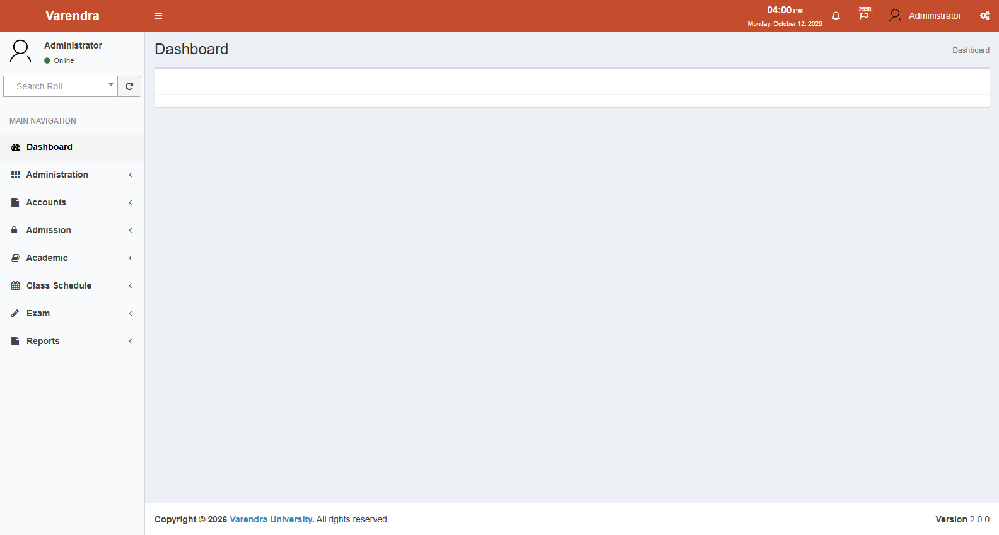
কার্যপদ্ধতি ১.১: নতুন ইউজার তৈরি ও রোল নির্ধারণ (User Account Creation)
- মেনু লোকেশন: বামপাশের মেনু থেকে Administration → Users-এ ক্লিক করুন।
- নতুন যুক্ত করতে: উপরের ডানপাশে থাকা Create / Add User বাটনে ক্লিক করুন।
- তথ্য পূরণ করুন:
- Name: ব্যবহারকারীর পূর্ণ নাম লিখুন।
- Email: ব্যবহারকারীর অফিশিয়াল ইমেইল অ্যাড্রেস লিখুন (এটি লগইন ইউজারনেম হিসেবে ব্যবহৃত হবে)।
- Department: ব্যবহারকারীর বিভাগ নির্বাচন করুন।
- Faculties & Departments (Scope): ব্যবহারকারী কোন কোন অনুষদ বা বিভাগের তথ্য দেখতে পারবেন তা সিলেক্ট করুন।
- Roles: ব্যবহারকারীকে উপযুক্ত রোল (যেমন: Teacher, Accounts Officer, Admission Officer) প্রদান করুন।
- সংরক্ষণ করুন: Save বাটনে ক্লিক করুন। সিস্টেম ব্যবহারকারীকে একটি ওয়ান-টাইম পাসওয়ার্ড ইমেইল করবে এবং প্রথম লগইনে পাসওয়ার্ড পরিবর্তন করতে বলবে।
Live System Capture
screenshots/03_07_users.png
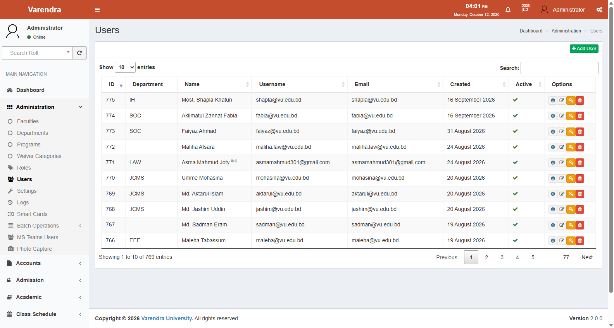
কার্যপদ্ধতি ১.২: সেমিস্টার সেটিংস ও ফি জমার ডেডলাইন নির্ধারণ (Semester Settings)
- মেনু লোকেশন: বামপাশের মেনু থেকে Administration → Settings-এ যান।
- প্রয়োজনীয় ফিল্ড পরিবর্তন করুন:
- Setting ID 1 (Current Session): চলমান সেশনের নাম আপডেট করুন (যেমন:
Summer-2026)। - Setting ID 2 & 3 (Registration Window): কোর্স রেজিস্ট্রেশন শুরুর এবং শেষ তারিখ দিন।
- Setting ID 4 & 5 (Payment Deadlines): ১ম কিস্তি এবং ২য় কিস্তির ফি জমার শেষ তারিখ নির্ধারণ করুন।
- Save Settings বাটনে চাপ দিয়ে তথ্য সংরক্ষণ করুন।
Live System Capture
screenshots/03_10_settings.png
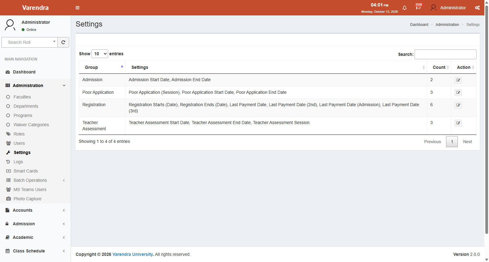
Role 2: শিক্ষক ও পরীক্ষক (Teacher / Faculty Member)
কাজের পরিধি
- নিজের কোর্সের জন্য বরাদ্দকৃত ক্লাস রুটিন দেখা।
- শিক্ষার্থীদের ক্লাসের উপস্থিতি (Attendance), ক্লাস টেস্ট (CT), মিডটার্ম ও ফাইনাল পরীক্ষার নম্বর এন্ট্রি করা।
- মার্কস এন্ট্রি শেষে লক/সাবমিট করা যাতে নম্বর অপরিবর্তিত থাকে।
কার্যপদ্ধতি ২.১: পরীক্ষার নম্বর এন্ট্রি করার নিয়ম (Marks Entry)
- মেনু লোকেশন: বামপাশের মেনু থেকে Exam → Marks-এ ক্লিক করুন।
- কোর্স নির্বাচন করুন:
- Exam Session: যেমন:
Summer-2026 - Program: যেমন:
B.Sc. in CSEবাBA (Hons) in English - Semester: সেমিস্টার নির্বাচন করুন
- Course & Section: নির্দিষ্ট কোর্স কোড এবং সেকশন (A, B বা C) বাছাই করুন।
- Show বাটনে ক্লিক করলে ওই সেকশনের সকল ছাত্র-ছাত্রীর রোল ও নামের তালিকা চলে আসবে।
- নম্বর বসান: প্রতিটি ছাত্রের পাশে থাকা কলামে প্রাপ্ত নম্বর বসান:
- Attendance (উপস্থিতি)
- Continuous Assessment / Class Test (CT)
- Midterm Exam (মিডটার্ম)
- Final Exam (ফাইনাল পরীক্ষা)
- উপস্থিতির স্ট্যাটাস দিন:
p(Present) — পরীক্ষায় উপস্থিত ছিলa(Absent) — অনুপস্থিত (০ নম্বর পাবে)e(Expelled) — বহিষ্কৃত- Save Draft: কাজ চলাকালীন যে কোনো সময় Save বাটন চেপে সংরক্ষণ করতে পারবেন। সিস্টেম স্বয়ংক্রিয়ভাবে মোট নম্বর ও লেটার গ্রেড (LG/GP) হিসাব করে দেখাবে।
Live System Capture
screenshots/07_03_marks.png
কার্যপদ্ধতি ২.২: মার্কস সাবমিট ও লক করা (Submit & Freeze)
- সমস্ত নম্বর সঠিকভাবে দেওয়া শেষ হলে পেজের নিচে থাকা Submit Marks বাটনে চাপ দিন।
- কনফার্মেশন পপ-আপে নিশ্চিত করুন।
- ⚠️ সতর্কতা: একবার সাবমিট করার পর শিক্ষক নিজে আর নম্বর পরিবর্তন করতে পারবেন না। ভুল হলে অ্যাডমিন বা পরীক্ষা নিয়ন্ত্রকের সাথে যোগাযোগ করতে হবে।
Role 3: ভর্তি শাখা (Admission Officer)
কাজের পরিধি
- নতুন ভর্তির জন্য সেশন ও ভর্তি পরীক্ষার তারিখ কনফিগার করা।
- অনলাইনে আবেদনকারী প্রার্থীদের তালিকা দেখা এবং মোবাইল নম্বর দিয়ে সার্চ করা।
- জাতীয় শিক্ষা বোর্ডের ডাটা (SSC/HSC GPA ও তথ্য) ভেরিফিকেশন যাচাই করা।
- নির্বাচিত আবেদনকারীদের রোল প্রদান করে স্থায়ী ছাত্র হিসেবে সিস্টেমে তালিকাভুক্ত (Transfer) করা।
কার্যপদ্ধতি ৩.১: ভর্তিচ্ছুদের আবেদনপত্র যাচাই (Reviewing Applicants)
- মেনু লোকেশন: বামপাশের মেনু থেকে Admission → Applicants-এ যান।
- আবেদনকারী খুঁজুন: উপরের সার্চ বক্সে প্রার্থীর Mobile Number অথবা Tracking ID লিখে এন্টার চাপুন।
- স্ট্যাটাস চেক করুন:
- Payment Status: আবেদন ফি পরিশোধ হয়েছে কি না (Paid/Pending)।
- Board Verification: শিক্ষা বোর্ডের ডাটার সাথে মিলেছে কি না (Verified/Manual Review)।
- প্রার্থীর নামের পাশে থাকা Details / View আইকনে ক্লিক করলে তার ছবি, স্বাক্ষর, পিতা-মাতার নাম ও শিক্ষাগত যোগ্যতার বিস্তারিত দেখা যাবে।
Live System Capture
screenshots/04_03_applicants.png

কার্যপদ্ধতি ৩.২: আবেদনকারীকে স্থায়ী ছাত্রে রূপান্তর (Transfer to Student)
- প্রার্থী ভর্তি ফি পরিশোধ করলে এবং সকল কাগজপত্র ঠিক থাকলে Admission → Transfer মেনুতে যান।
- প্রার্থীর ট্র্যাকিং নম্বর সিলেক্ট করুন।
- সিস্টেম স্বয়ংক্রিয়ভাবে তাকে
Studentমডিউলে নিয়ে যাবে এবং তাকে একটি স্থায়ী রোল নম্বর বরাদ্দের অপশন দেবে।
Role 4: হিসাব শাখা (Accounts Officer)
কাজের পরিধি
- প্রতিটি প্রোগ্রামের জন্য ক্রেডিট ফি ও সেমিস্টার ফি নির্ধারণ করা।
- সেমিস্টার কোর্স অনুযায়ী স্বয়ংক্রিয় টিউশন ইনভয়েস তৈরি ও কিস্তি ভাগ করা।
- ব্যাংকে টাকা জমা হলে ভাউচার দেখে সিস্টেমে পেমেন্ট পোস্টিং দেওয়া।
- শিক্ষার্থীদের স্কলারশিপ ও ওয়েভার ডিসকাউন্ট সমন্বয় করা।
- স্টুডেন্ট লেজার দেখে যে কোনো শিক্ষার্থীর আর্থিক দেনা-পাওনা অডিট করা।
কার্যপদ্ধতি ৪.১: ফি সেটিংস কনফিগার করা (Fee Settings)
- মেনু লোকেশন: বামপাশের মেনু থেকে Accounts → Fee Settings-এ যান।
- নির্দিষ্ট প্রোগ্রাম ও সেশন সিলেক্ট করুন।
- টিউশন ফি (প্রতি ক্রেডিটের হার), ল্যাব ফি ও অন্যান্য চার্জ ইনপুট দিয়ে সেভ করুন।
Live System Capture
screenshots/06_01_feesettings.png

কার্যপদ্ধতি ৪.২: শিক্ষার্থীর ইনভয়েস দেখা ও পেমেন্ট পোস্টিং (Invoices & Payment Posting)
- মেনু লোকেশন: বামপাশের মেনু থেকে Accounts → Invoices-এ যান।
- ইনভয়েস নম্বর অথবা শিক্ষার্থীর Roll Number দিয়ে সার্চ করুন।
- তালিকা থেকে শিক্ষার্থীর ইনভয়েস দেখতে পাবেন:
- Gross Amount: মোট নির্ধারিত ফি।
- Waiver: অনুমোদিত ছাড় বা স্কলারশিপের পরিমাণ।
- Net Payable: প্রকৃত প্রদেয় টাকা।
- Installments: কিস্তির বিবরণ (১ম কিস্তি ও ২য় কিস্তি)।
- ব্যাংকের জমার রসিদ পাওয়ার পর Post Payment বাটনে ক্লিক করুন, ব্যাংক ব্রাঞ্চ ও রসিদের ট্রানজ্যাকশন নম্বর দিয়ে সাবমিট করলেই টাকা পরিশোধিত হয়ে যাবে।
Live System Capture
screenshots/06_03_invoices.png
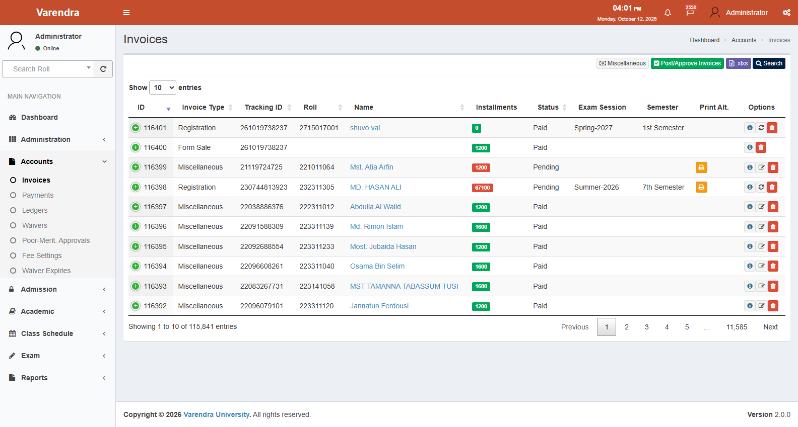
কার্যপদ্ধতি ৪.৩: শিক্ষার্থীর অর্থনৈতিক খতিয়ান যাচাই (Student Financial Ledger)
- মেনু লোকেশন: বামপাশের মেনু থেকে Accounts → Ledgers-এ যান।
- শিক্ষার্থীর রোল নম্বর লিখুন।
- সিস্টেমে ওই শিক্ষার্থীর ভর্তির দিন থেকে আজ পর্যন্ত সকল ডেবিট (ফি ধার্য) এবং ক্রেডিট (টাকা জমা) ট্রানজ্যাকশন এবং বর্তমান বকেয়া (Balance) নিখুঁতভাবে চলে আসবে।
Live System Capture
screenshots/06_10_ledgers.png
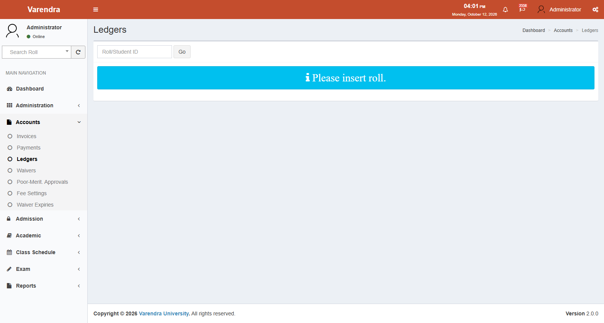
Role 5: পরীক্ষা নিয়ন্ত্রক (Controller of Examinations)
কাজের পরিধি
- শিক্ষকদের সাবমিট করা কোর্সের নম্বর পরীক্ষা করা এবং অনুমোদন (Approve) দেওয়া।
- সেমিস্টারের শতভাগ কোর্সের নম্বর জমা হওয়ার পর চূড়ান্ত রেজাল্ট প্রক্রিয়াকরণ ও প্রকাশ করা।
- অফিশিয়াল ট্যাবুলেশন শিট, গেজেট ও গ্রেড শিট প্রিন্ট বা সংরক্ষণ করা।
কার্যপদ্ধতি ৫.১: কোর্সের নম্বর অনুমোদন (Marks Approval)
- মেনু লোকেশন: Exam → Marks → Approve-এ যান।
- নির্দিষ্ট সেমিস্টার, প্রোগ্রাম ও কোর্স সেকশন সিলেক্ট করুন।
- পরীক্ষকের দেওয়া সর্বোচ্চ, সর্বনিম্ন ও গড় নম্বর পর্যবেক্ষণ করুন।
- সবকিছু সঠিক থাকলে Approve Marks বাটনে ক্লিক করুন। সাথে সাথে প্রতিটি ছাত্রের লেটার গ্রেড ও গ্রেড পয়েন্ট স্থায়ীভাবে সংরক্ষিত হয়ে যাবে।
কার্যপদ্ধতি ৫.২: চূড়ান্ত সেমিস্টার রেজাল্ট প্রকাশ (Result Publication)
- মেনু লোকেশন: Exam → Results → Create-এ যান।
- প্রোগ্রাম ও সেমিস্টার নির্বাচন করুন।
- সিস্টেম স্বয়ংক্রিয়ভাবে যাচাই করবে যে ওই সেমিস্টারের সব কোর্সের নম্বর অনুমোদন হয়েছে কি না।
- সব নম্বর অনুমোদিত থাকলে সিস্টেম ব্যাচের সকল ছাত্রের SGPA এবং ব্যাচ র্যাংক (Rank) স্বয়ংক্রিয়ভাবে ক্যালকুলেট করবে।
- Publish বাটনে চাপ দেওয়া মাত্রই ফলাফল প্রকাশিত হবে এবং শিক্ষার্থীরা তাদের নিজস্ব পোর্টালে রেজাল্ট দেখতে পারবে।
Live System Capture
screenshots/07_09_results.png
Role 6: অ্যাকাডেমিক ও রেজিস্ট্রার অফিস (Academic & Registrar Staff)
কাজের পরিধি
- শিক্ষার্থী ডিরেক্টরি বজায় রাখা এবং স্ট্যাটাস ট্র্যাক করা (নিয়মিত, স্থগিত বা বহিষ্কৃত)।
- সিলেবাস ও কোর্স ক্যাটালগ তৈরি করা।
- সেমিস্টার কোর্স রেজিস্ট্রেশন সম্পন্ন করা (Auto & Manual Registration)।
- ট্রান্সক্রিপ্ট, প্রভিশনাল সার্টিফিকেট, টেস্টিমোনিয়াল ও মাইগ্রেশন সার্টিফিকেট ইস্যু করা।
কার্যপদ্ধতি ৬.১: শিক্ষার্থী ডিরেক্টরি অনুসন্ধান (Student Directory)
- মেনু লোকেশন: Academic → Students-এ যান।
- সার্চ বারে রোল নম্বর, নাম বা ব্যাচ লিখে সার্চ করুন।
- প্রার্থীর নামের পাশে থাকা অপশন থেকে তার পূর্ণাঙ্গ তথ্য, অ্যাডভাইজর, সিলেবাস ও রেজিস্ট্রেশন দেখতে পারবেন।
Live System Capture
screenshots/05_01_students.png
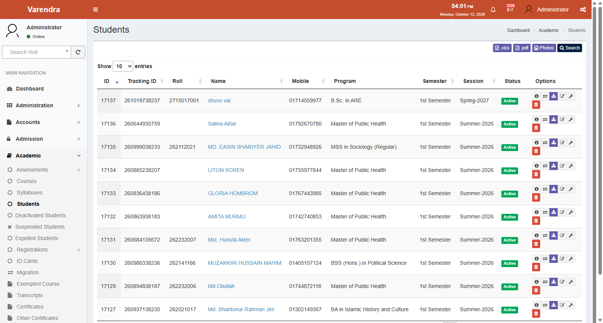
কার্যপদ্ধতি ৬.২: ট্রান্সক্রিপ্ট ও সার্টিফিকেট তৈরি (Transcripts Generation)
- মেনু লোকেশন: Academic → Transcripts-এ যান।
- শিক্ষার্থীর রোল নম্বর লিখুন।
- ট্রান্সক্রিপ্টের ধরন নির্বাচন করুন:
- Partial Transcript: অধ্যয়নরত শিক্ষার্থীদের জন্য চলমান সেমিস্টার পর্যন্ত প্রাপ্ত ফলাফলের ট্রান্সক্রিপ্ট।
- Final Transcript: ডিগ্রি সম্পন্নকারী গ্র্যাজুয়েটদের জন্য পূর্ণাঙ্গ ট্রান্সক্রিপ্ট।
- Generate PDF বাটনে ক্লিক করলেই অফিশিয়াল সিকিউরিটি ফরম্যাটে ট্রান্সক্রিপ্ট ডাউনলোড হয়ে যাবে।
Live System Capture
screenshots/05_14_transcripts.png
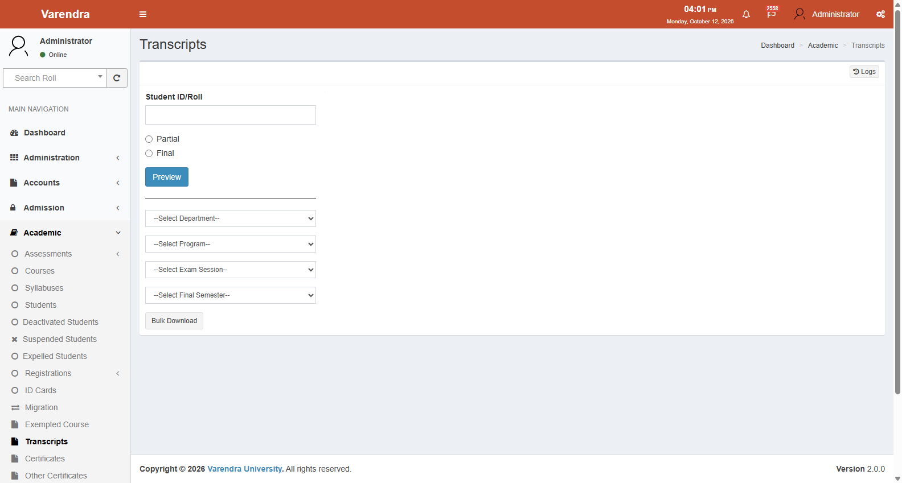
Role 7: শিক্ষার্থী পোর্টাল নির্দেশিকা (Student Portal Guide)
কাজের পরিধি
- নিজের রোল ও পাসওয়ার্ড দিয়ে নিজস্ব পোর্টালে লগইন করা।
- সাপ্তাহিক ক্লাস রুটিন ও রুম নম্বর দেখা।
- সেমিস্টার ফি, কিস্তির পরিমাণ ও পেমেন্ট হিস্ট্রি দেখা।
- প্রকাশিত সেমিস্টার পরীক্ষার রেজাল্ট ও গ্রেড দেখা।
- ট্রান্সক্রিপ্ট বা সনদের জন্য ঘরে বসেই আবেদন করা।
কার্যপদ্ধতি ৭.১: স্টুডেন্ট পোর্টালে লগইন করার নিয়ম
- ব্রাউজারে
http://localhost:8083/front/student/loginঠিকানায় যান। - Student ID / Roll: আপনার পূর্ণ রোল নম্বর লিখুন (যেমন:
193011001)। - Password: আপনার পাসওয়ার্ড লিখুন (ডিফল্ট পাসওয়ার্ড হিসেবে জন্ম নিবন্ধন নম্বর বা মোবাইল নম্বর থাকে)।
- Login বাটনে ক্লিক করুন।
Live System Capture
screenshots/02_01_student_login.png
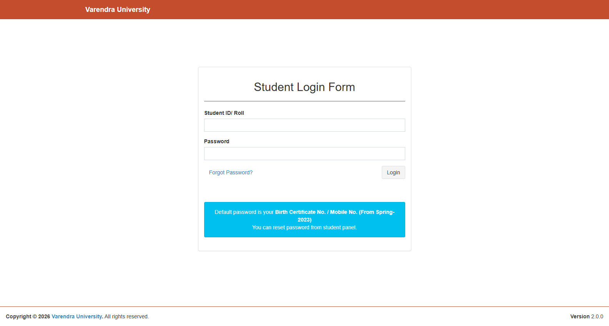
কার্যপদ্ধতি ৭.২: প্রোফাইল ও একাডেমিক তথ্য দেখা (Student Profile)
- লগইন করার পর সরাসরি আপনার প্রোফাইল পেজ চলে আসবে।
- এখানে আপনার নাম, বর্তমান সেশন, ব্যাচ, সেমিস্টার, রক্তেল গ্রুপ এবং নির্ধারিত শিক্ষক বা অ্যাডভাইজরের নাম দেখতে পাবেন।
Live System Capture
screenshots/02_02_student_profile_info.png
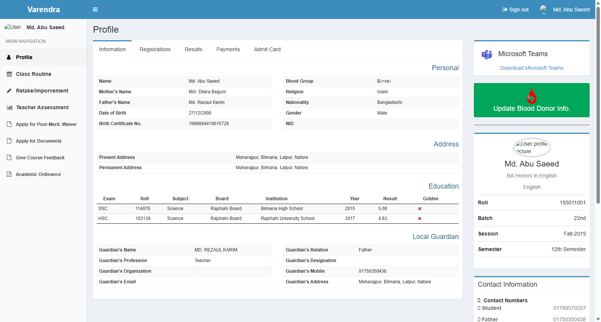
কার্যপদ্ধতি ৭.৩: পরীক্ষার ফলাফল ও গ্রেড দেখা (Checking Results)
- প্রোফাইলের মেনু থেকে Results ট্যাবে ক্লিক করুন।
- এখানে আপনার প্রতিটি সেমিস্টারে নেওয়া কোর্সের তালিকা, ক্রেডিট, লেটার গ্রেড (যেমন:
A+,A,A-) এবং গ্রেড পয়েন্ট দেখা যাবে। - ডানপাশে প্রতিটি সেমিস্টারের অর্জিত ক্রেডিট ও SGPA স্পষ্টভাবে প্রদর্শিত হবে।
Live System Capture
screenshots/02_06_student_result_card.png
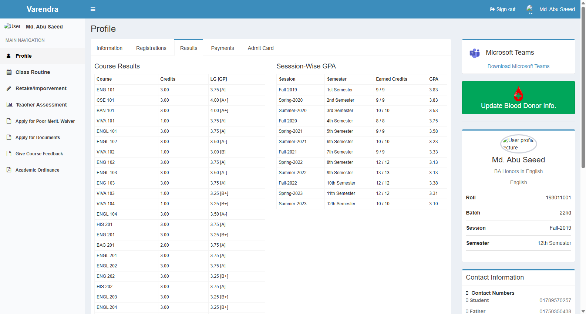
কার্যপদ্ধতি ৭.৪: ফি ও কিস্তির বিবরণ দেখা (Payments & Invoices)
- প্রোফাইলের Payments ট্যাবে ক্লিক করুন।
- আপনার সেমিস্টার ফি এর মোট টাকা, কত টাকা পরিশোধ হয়েছে এবং কত টাকা বকেয়া রয়েছে তা দেখতে পাবেন।
- কিস্তি অনুযায়ী ফি এর পরিমাণ (যেমন: ১ম কিস্তি ও ২য় কিস্তির ভাগ) পরিষ্কারভাবে দেখা যাবে।
Live System Capture
screenshots/02_04_student_invoices.png
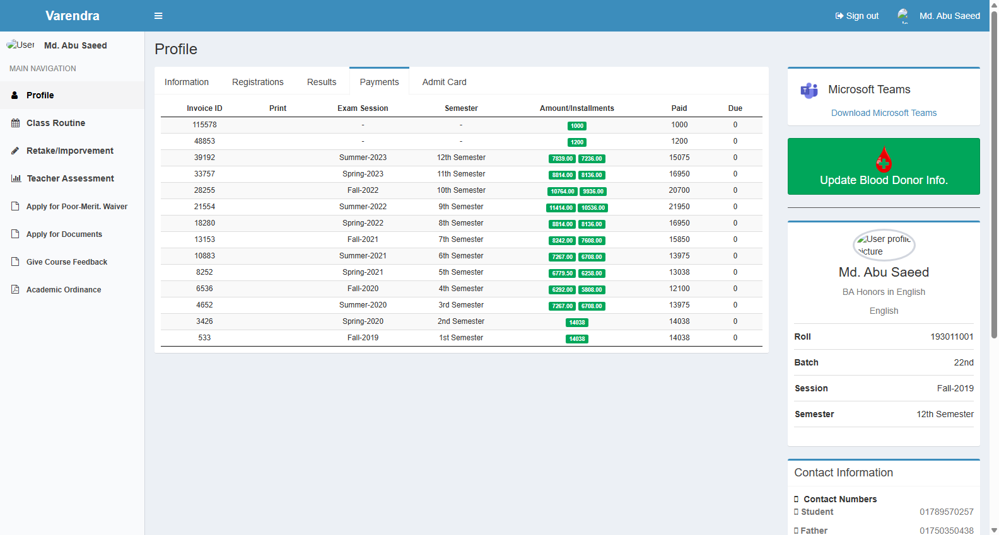
কার্যপদ্ধতি ৭.৫: ক্লাস রুটিন দেখা (Class Routine)
- বামপাশের মেনু থেকে Class Routine অপশনে ক্লিক করলে রবি থেকে বৃহস্পতিবার পর্যন্ত আপনার ক্লাসের সময়, কোর্সের নাম, শিক্ষকের নাম এবং নির্দিষ্ট রুম নম্বর গ্রিড আকারে চলে আসবে।
Live System Capture
screenshots/02_03_student_routine.png

Role 8: নতুন আবেদনকারী নির্দেশিকা (Public Applicant Guide)
কাজের পরিধি
- বরেন্দ্র বিশ্ববিদ্যালয়ে যেকোনো প্রোগ্রামে অনলাইনে ভর্তির আবেদন করা।
- এসএসসি ও এইচএসসি পরীক্ষার বোর্ড রোল দিয়ে স্বয়ংক্রিয় ডাটা যাচাই করা।
- প্রার্থীর ছবি, স্বাক্ষর ও অন্যান্য প্রয়োজনীয় কাগজপত্র আপলোড করা।
- ভর্তি পরীক্ষার প্রবেশপত্র (Admit Card) ডাউনলোড করা।
কার্যপদ্ধতি ৮.১: অনলাইন রেজিস্ট্রেশন ও আবেদন ফর্ম পূরণ
- ব্রাউজারে
http://localhost:8083/front/applicant/homeলিংকে প্রবেশ করুন। - New Applicant (Sign Up) ট্যাবে ক্লিক করুন।
- আপনার বোর্ড, এসএসসি ও এইচএসসি পরীক্ষার রোল, রেজিস্ট্রেশন নম্বর, মোবাইল নম্বর ও পাসওয়ার্ড দিয়ে সাইন-আপ করুন।
Live System Capture
screenshots/01_01_applicant_portal_home.png
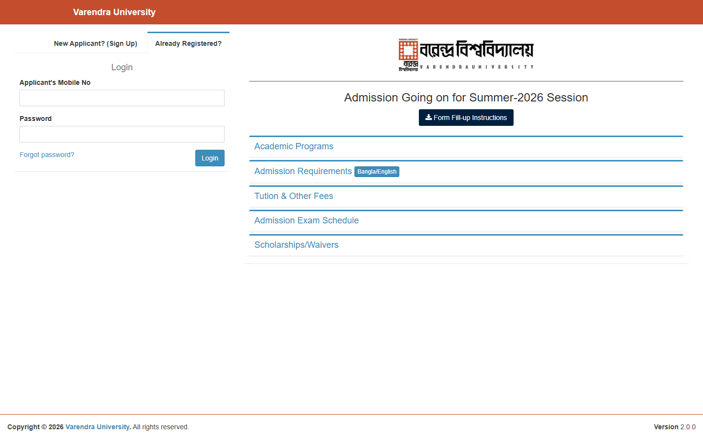
কার্যপদ্ধতি ৮.২: প্রোফাইল তথ্য ও ডকুমেন্ট আপলোড
- আপনার মোবাইল নম্বর ও পাসওয়ার্ড দিয়ে লগইন করুন।
- Personal Information, Contact Address, Guardian Information, Education সেকশনগুলো একে একে পূরণ করুন।
- Attachments সেকশনে পাসপোর্ট সাইজের রঙিন ছবি এবং পরিষ্কার স্বাক্ষর স্ক্যান করে আপলোড করুন।
- ১০০% প্রোফাইল সম্পন্ন হলে কাঙ্ক্ষিত প্রোগ্রামে আবেদন সাবমিট করুন।
Live System Capture
screenshots/01_03_applicant_profile.png

Operational Note
সতর্কতামূলক সারসংক্ষেপ (Summary Note): EasyMate ERP সফটওয়্যারটি বিশ্ববিদ্যালয়ের সকল একাডেমিক ও স্টুডেন্ট কার্যক্রমকে নিখুঁতভাবে সমন্বিত করে। কোনো কাজে সমস্যা দেখা দিলে বা টেকনিক্যাল সহযোগিতার প্রয়োজন হলে ডিপার্টমেন্ট কো-অর্ডিনেটর অথবা আইটি শাখার সহায়তা নিন।